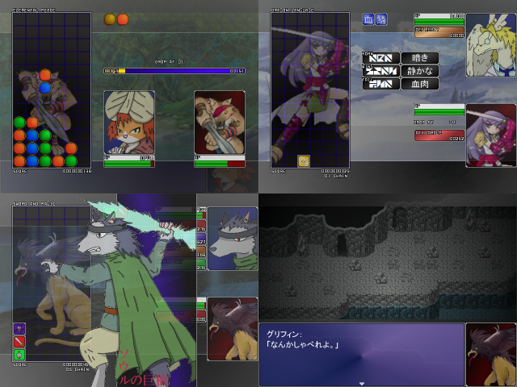

| |
 |
|
| 作者：OPUWA | |
| ツクール：XP | |
| 作者コメント： パズルを戦闘システムにしたRPGを開発中です。 難易度など、プレイヤーさんのご意見を拝聴したいので、 今回はパズル部分のみを収録したアーケード・体験版を この場をお借りして公開したいと考えております。 三種類のパズルシステムを収録 ・Elemental Peace（左上） ぷよ○よの丸パクリ。作者に連鎖センスがまるで無いため、 ゲームバランスの調整が全然できていない可能性あり。 連鎖して攻撃力を高め、敵の攻撃を押し返す殴り合い形式。 ・Dragon Language（右上） 角詞（HORN）、翼詞（WING）、尾詞（TAIL）を繋げて言葉を作り、 現象を起こすことで敵と戦う接続パズル。 赤→黄→青の順に並べればよいので一度に大量の言葉を生み出すことも可能。 ・Sword and Magic（左下） 超低難易度、同じブロックを二つ繋げれば消えるビギナー向けパズル。 連鎖が狙いやすいうえ、エネミーブロックを消せば敵の攻撃なので、 敵の攻撃を管理できる。 ただし、連鎖にエネミーブロックを混ぜると危険。 ※ご注意 ・現在、プレイ中にエラーメッセージを表示せずにRGSSプレイヤーが停止する不具合が 確認されており、解決方法を模索中です。詳しくは説明書をご確認ください。 ・上記の不具合も含め、プレイ環境に一定以上のスペックが要求される可能性があります。 少し古いPCにて、負荷がかかりすぎて画面更新が遅れ、スクリプトがハングアップする という不具合が確認されております。 作者の開発環境である、メモリ4GB以上を推奨いたします。 ・現状、ダメージ計算式、グラフィック表示、スコア算出など、様々な点が試作段階です。 お気付きの点などがございましたら、一声かけてくださると幸いです。 ・絵がアレなのは自覚しているつもりなので、あまりこっぴどくたたかないでください… (´；ω；｀) |
|
| 管理人コメント： ぷよぷよクエスト楽しかったなあ。あ、ソシャゲじゃない方ですよ |
|
| ダウンロード(32.4MB) / 感想掲示板 | |
| 前の作品 / 次の作品 / TOPへ戻る | |